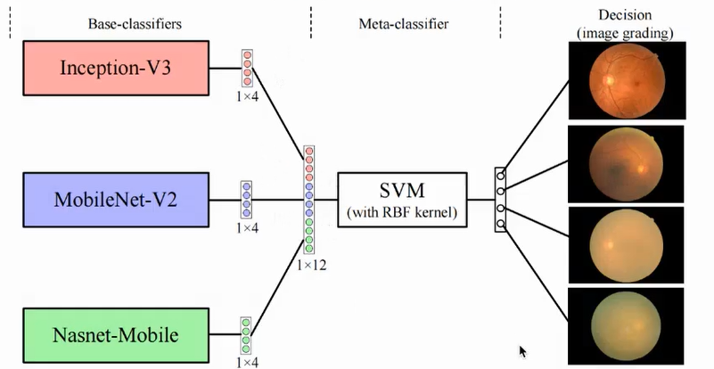
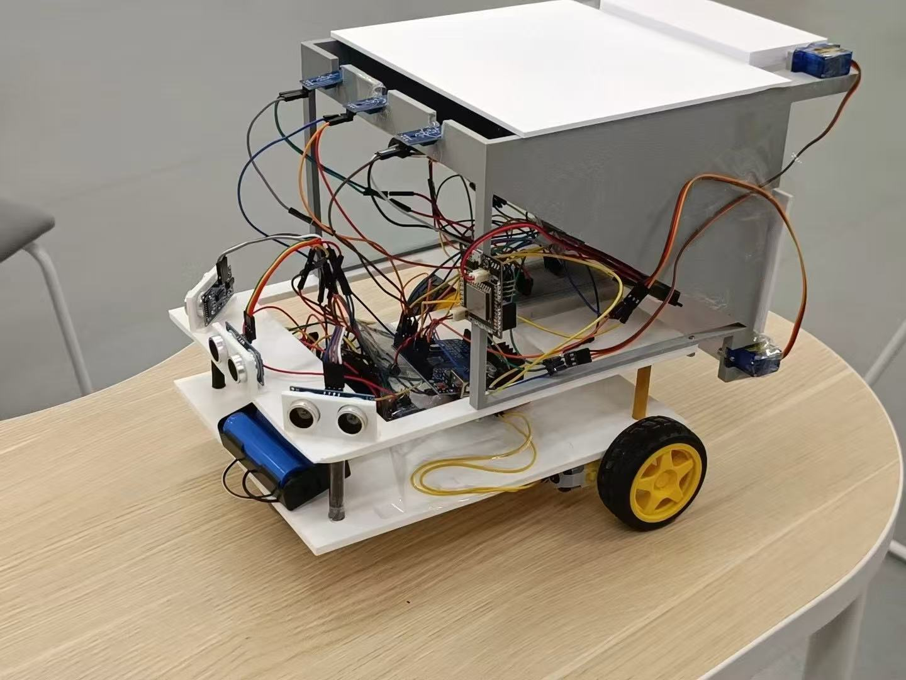
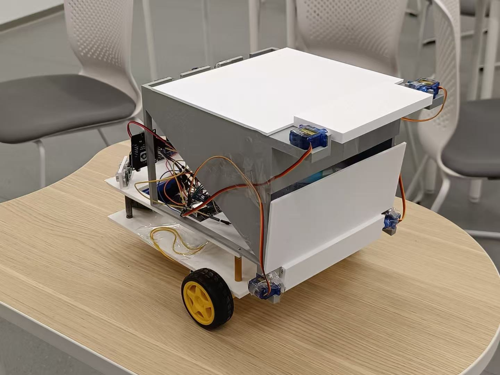

I am a robotics postgraduate student interested in intelligent machines, robot perception and autonomous systems. My project work spans mobile robot mapping and navigation, robotic manipulation, machine learning, and voice-interactive devices.
From undergraduate robotics engineering to postgraduate study in Robotics.
Undergraduate
Xi’an Jiaotong-Liverpool University
BEng Intelligent Robotics Engineering with Contemporary Entrepreneurialism. The programme combines robotics with computer science, AI and machine learning, automation, electronics, sensing and mechatronics, with an emphasis on practical projects.
MSc Robotics. The interdisciplinary programme combines mechatronics and computer science, with themes including autonomous systems, AI and machine learning, cognitive robotics, and human-robot interaction.
Curious about how machines understand and move through the world.
My academic path spans a BEng in Intelligent Robotics Engineering at Xi’an Jiaotong-Liverpool University and postgraduate study in Robotics at The University of Manchester. It has given me a foundation across robotics, computer vision, mechanical design and machine learning.
I enjoy turning an engineering idea into a working system, testing its limits and learning from the results. Here I share selected projects, with space for photos and videos that show how they came together.
03 / Selected Projects
From image data to physical interaction.
Choose an area to explore projects in robotics, perception and machine learning.
Showing all 4 projects
PROJECT 01 · 2024
Deep-learning Based Diagnostic Model for Glaucoma
Explored recent approaches to glaucoma diagnosis and prepared fundus-image data through cleaning, augmentation and labelling. Trained a convolutional neural network to classify images and achieved a 95% true-positive rate (190/200) on the test set, demonstrating the potential of machine learning to support earlier screening.

Ensemble model workflow for fundus image grading.
Machine LearningCNNMedical Imaging
PROJECT 02 · EMBEDDED SYSTEMS
Simple Animation on a Wildfire MCU Board
Designed a simple animation and programmed a Wildfire MCU development board to display it on screen. The project combines embedded programming with display control and visual design, translating an original animation concept into a working demonstration on hardware.
Embedded SystemsMCUDisplay ControlAnimation
PROJECT 03 · TURTLEBOT
TurtleBot Mapping and Autonomous Navigation
Implemented a mobile-robot mapping and navigation project using TurtleBot. The robot explored its surroundings to build a map, then used that map to navigate through the environment toward target locations. The work demonstrates an end-to-end mobile robotics workflow, from perceiving the space to moving through it autonomously.
TurtleBotMobile RoboticsMappingNavigation
PROJECT 04 · SMART BIN
Voice-interactive Smart Waste Bin
Helped develop a smart waste bin that responds to spoken interaction. In response to a voice command, the system automatically opens the lid and carries out the waste-disposal action, bringing together voice interaction and automated operation to make everyday disposal more convenient.


Voice InteractionAutomationSmart Device
04 / Skills
Tools I use to design, build and investigate.
Programming
C++ · Python · MATLAB
Robotics
ROS · Robot control · Motion planning
Design & Engineering
SolidWorks · AutoCAD · Sensors and instrumentation
Languages
Mandarin (native) · English (fluent)
Interests
Robot perception · Computer vision · Intelligent systems
05 / Contact
Interested in robotics, perception or engineering collaboration?